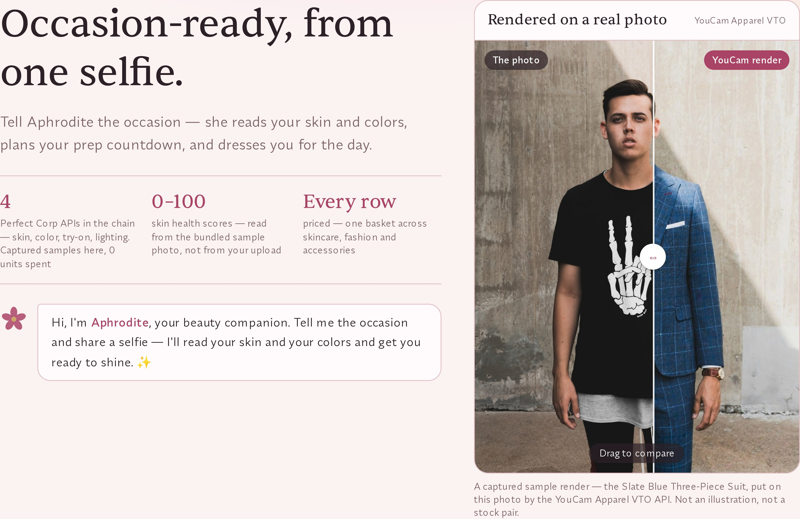
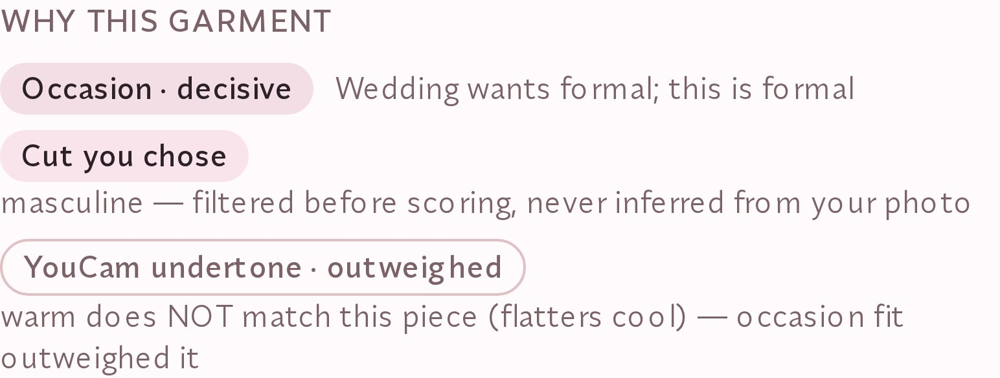
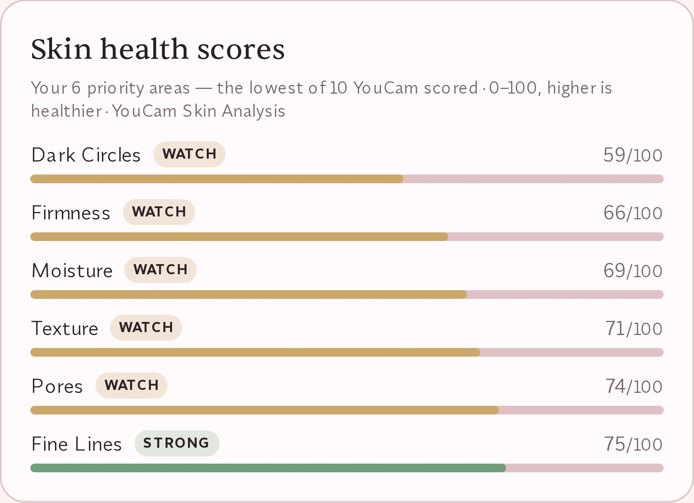
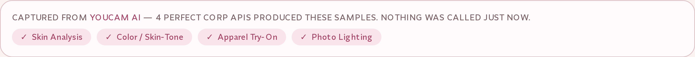

Skin AI + Apparel VTO, fused · built on the YouCam API
Before a wedding or an interview I want three things answered in one place: what to do about my skin between now and the day, what to wear for my colouring, and where to buy it. Aphrodite answers all three from a single photo — the same YouCam skin read that drives the prep countdown also feeds the colour profile that picks the garment that gets rendered onto you.
This page shows how it works — and lets you check every claim yourself, without taking my word for it. A render is a claim about whose face is in it, so the app refuses to show you a render of anyone who isn't you.
Proof, not promises
Every render in the demo is a real YouCam capture of the face it is shown on, and three of the four carry a receipt in the repo with Perfect Corp's own task id, poll envelopes, and the sha256 of the returned bytes — the fourth, the landing hero, predates the receipt harness and the code says so instead of borrowing one. The strongest evidence isn't a success — it's that the receipts keep the failures too. This one is the live API rejecting our own bundled sample photo:
"feature": "skin_analysis",
"taskEndpoint": "/s2s/v2.1/task/skin-analysis",
"taskId": "c7T3vNWgHHYWcLggioP64zfd0hdmoNT1O6zb356KzpFHOKctZv74OGxvIFr4TgWdZ1Dw5stRx3QX_3QtFuxIQ_pW0L5pGgwoOlVxfElKXLk",
"pollEnvelopes": [
{ "status": 200, "data": { "error": null, "results": null, "task_status": "running" } },
{ "status": 200, "data": {
"error": "error_src_face_too_small",
"error_message": "The face area in the uploaded image is too small", ...
{
"status": "ok",
"public_demo_mode": true,
"live_runs_used": 2,
"live_runs_budget": 8,
"garments": 11,
"skincare_skus": 17,
"youcam_apis_declared": 8,
"youcam_apis_rendering": 4,
"youcam": "key_present_unverified",
"youcam_reason": "key present; not probed because every YouCam task call costs units"
}
The counts are honest on purpose: 8 endpoints declared, 4 rendering on the path you can drive. The other four return an honest empty state instead of an image — the table in the README names each one and why.
The real interface




Verify it yourself — no account, no key
The bytes the live site serves, the file committed in the repo, and the hash inside the Perfect Corp receipt are the same object. That chain can't be faked without real provider calls — and you can reproduce it from any shell:
$ curl -s https://aphrodite.max-gutowski.de/fixtures/finish-wedding.jpg | sha256sum 2823726249d36b5825c0b86ad0b1a3953e34461cd7e3208d25948262415ddf87 - $ sha256sum hackathon/receipts/002/photo_lighting.render.jpg 2823726249d36b5825c0b86ad0b1a3953e34461cd7e3208d25948262415ddf87 hackathon/receipts/002/photo_lighting.render.jpg $ grep -o '"sha256": "[a-f0-9]*"' hackathon/receipts/002/receipt.json "sha256": "2823726249d36b5825c0b86ad0b1a3953e34461cd7e3208d25948262415ddf87"
A test in the suite (tests/fixture-identity.test.ts) fails if any served render ever stops matching its receipt — so this page can't silently rot either.
Judge mode — the paths that spend money
Everything above is the keyless demo: captured YouCam renders, zero API units per visit, and the page says so on screen. Two paths cost real money and sit behind an access code — live YouCam renders of your own photo, and the GPT-driven agentic engine that orchestrates the APIs as tools. Judges get the code in the Devpost testing field and redeem it at /unlock; it becomes a 12-hour cookie, and unlocked runs are metered by a ledger you can read at /healthz. When the budget is gone the app keeps working on captured samples and states that on screen — it never passes one off as the other.
With the cookie, /api/dev/verify replays the full request/response contract from the committed receipts at zero cost — real task ids, the four-step sequence, the hashes, and the two calls that failed. Append &spend=1&image=<url> and it makes real calls instead, metered by the same ledger.